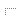
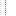
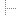
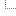
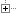

前言
角色创建速查

出身世界

出身速查
蛮荒世界

黄昏星（审判官手册）
巢都世界
巢都变种人（激进派手册）
枪灰城（审判官手册）
沃格巢都（审判官手册）
帝国世界
马卡贝斯五号（审判官手册）
锡诺菲亚（审判官手册）
修院栽培（忠烈之血）
虚空生人
卡利西斯舰队（审判官手册）
黑暗舰舱人（激进派手册）
铸造世界（审判官手册）
遗失的数据板
思维洗涤（审判官手册）
贵族生人（审判官手册）
马尔菲污血（激进派手册）
役从门生（忠烈之血）
忠嗣学院（审判官手册）
枯萎学院（激进派手册）
圣殿世界（忠烈之血）
背景包
审判官手册
文员
军务部军需官
言究学社学者
虚空商贸员
法务官
卡利西斯型连环凶案
大锡诺菲亚空心人
卢格南的红窟
杀手
星海锋刃
谋杀歌者
冥父之子
牧师
塔苏斯至圣经院
托钵传教士
救赎教派布焰使
卫队士兵
玛拉登陆点大屠杀
边际远征军
特伦奇战争老兵
灵能者
魂覆暗影
神皇之光指引
活梦魇
流氓
野兽屋奴商
冷行会情报员
托罗斯联盟

技术神甫
图勒门徒
索雷克斯圣光教
玛琉格利斯技术异端
激进派手册
戴罪之身
异端教派
正义，而非法律
赎罪者
持尔真名
不可接触者
亚空间侵染
命线缠绕
忠烈之血
蒙福降生
皈依者
朝圣者
背弃万机神之人
得见神迹
恶魔猎手
血肉圣化
降魔者
宿命噬者
宿主备身
裁决之书
冷贸易商
执法者
巢都马仔
冒充者
卡斯巴利卡“贵族”
无罪证明
西贝柳斯拾荒者
底巢商人
精英进阶
巫术
黑暗诸神的门徒
激进派手册
神术
审判官手册中的神术
忠烈之血中的神术
DH01 核心规则
概览
第一章：创建角色
创建你的侍僧
让你的角色活起来
角色创建补充包（节选）
DH02 GM工具包
第一章 肉中群蛆
第二章 附录
DH03 净化不洁
DH04 审判官手册
DH05 黑暗诸神之门徒
DH06 咒逐罪物
更新日志